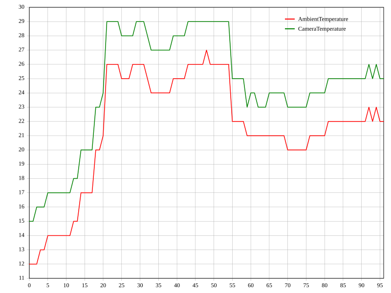
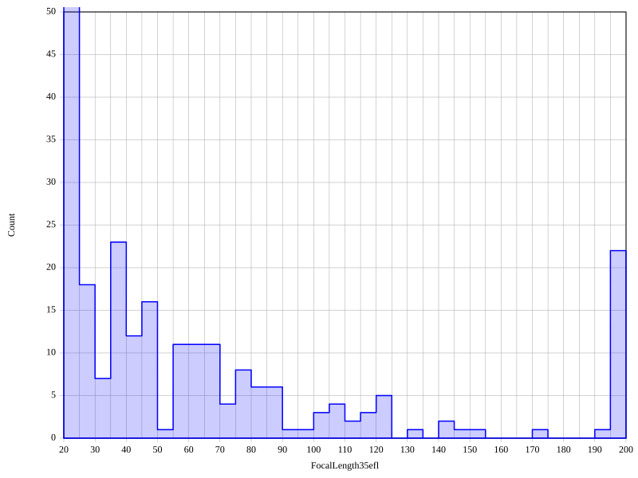
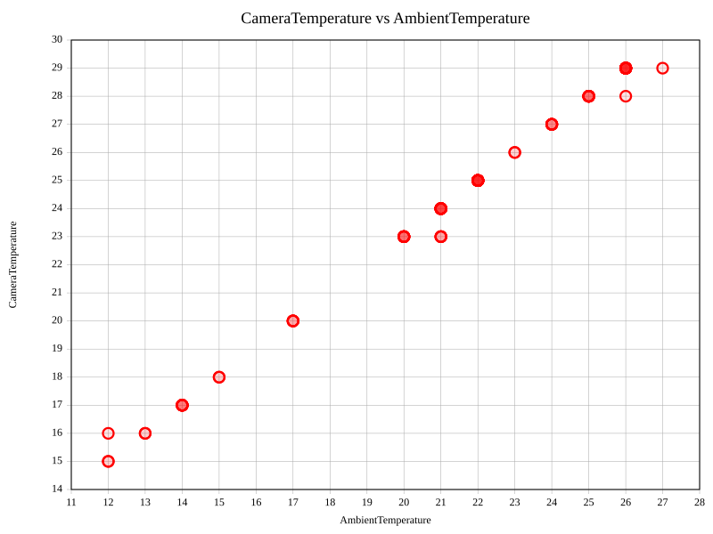
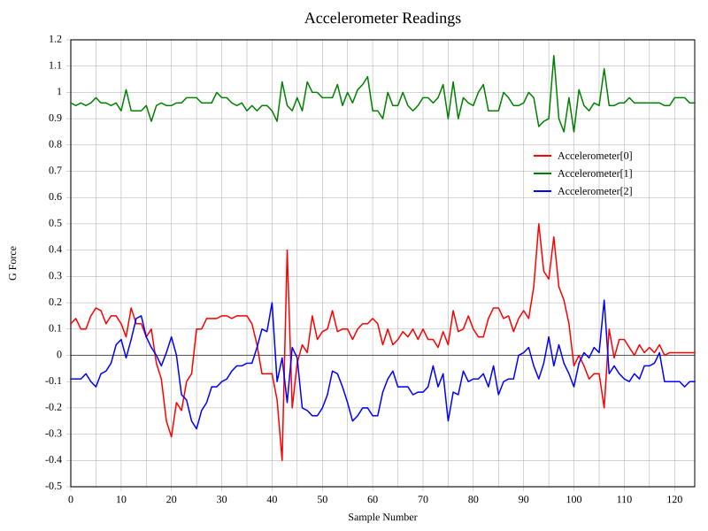
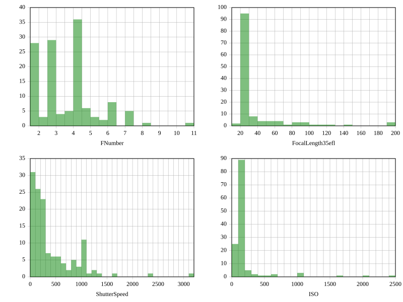

Az exiftool alkalmazás -plot opciója SVG-formátumú kimeneti
ábrafájlok generálására szolgál a tagek értékeiből. Ennek a szolgáltatásnak sok
felhasználása van, például időbélyeggel ellátott metaadatok ábrázolása a
-ee (ExtractEmbedded) opcióval kombinálva, valamint egy vagy több
tag értékeinek ábrázolása egy képhalmazon keresztül.
Bármely numerikus értékű tag ábrázolható, beleértve a sztringeket és a számok
listáit is. Legfeljebb 20 adathalmaz (pl. tag) ábrázolható együtt ugyanabban az
ábrában, kivéve a hisztogramábrákat, amelyeknél a határ csak egy (de a
Multi beállítással több ábra is rajzolható egyszerre). Ha túl sok
taget próbálsz egyszerre ábrázolni, az figyelmeztetést eredményez, és a
felesleges adathalmazok figyelmen kívül maradnak. Az X és Y skála minden ábrán
belül közös az összes adathalmaz számára (azaz egyetlen ábrán belül több
adathalmaz mind ugyanazokat a skálákat használja).
Az ábra megtekinthető az SVG-fájl megnyitásával a kedvenc böngésződben vagy egy SVG-t kezelő képnézegetőben. A legtöbb modern böngésző támogatja az SVG-képek megjelenítését.
Három alapvető ábratípus áll rendelkezésre: Line (vonal), Scatter (pontfelhő) és Histogram (hisztogram). Mindegyikre példa található az alábbi Példák szakaszban.
Az ábrabeállítások az API Plot opción keresztül változtathatók. Több opció is beállítható egyszerre, vagy úgy, hogy vesszővel elválasztott listába fűzöd őket össze, vagy több API Plot opción keresztül.
Az egyes beállítások szintaxisa NÉV=ÉRTÉK. A
beállításnevek kis-/nagybetűre nem érzékenyek. A NÉV=
érték nélküli használata az értéket undef-re állítja. A
NÉV önmagában való használata az értéket 1-re állítja.
Például az ábra címének és az első adatvonal színének beállításához a parancs a
következő lehet:
exiftool -plot -api plot="title=some title,cols=pink" ...
ExifTool ábrabeállítások Név Leírás Érték Alapértelmezés Type Az ábra típusa 'Line', 'Scatter' vagy 'Histogram' 1 'Line' Style Az ábra adatpontjainak stílusa Nevek sztringje: 2,3 'Line', 'Marker' és/vagy 'Fill' 'Line+Fill' a hisztogramábráknál, egyébként 'Line' Title Az ábra címe Bármilyen sztring 4 '' (automatikusan generált) 5 XLabel Az X tengely feliratsztringje Bármilyen sztring 4 '' (automatikusan generált) 5 YLabel Az Y tengely feliratsztringje Bármilyen sztring 4 '' (automatikusan generált) 5 XMin, XMax Az X tengely minimuma és maximuma a Scatter és Histogram ábratípusoknál Egy szám undef (automatikus skálázás) YMin, YMax Az Y tengely minimuma és maximuma (a YMin beállítás nem vonatkozik a hisztogramábrákra) Egy szám undef (automatikus skálázás) NBins A hisztogramábra rekeszeinek száma Egy szám '20' Multi Jelző több ábra rajzolásához, adathalmazonként egy Ábrák száma soronként a kimeneti képen 6 undef Split Számsztringek felosztása külön adathalmazokra Adathalmazok száma, vagy 1 az összes felosztásához 7 undef Size A kimeneti kép szélessége és magassága 2 szám sztringje 2 '800 600' Margin Bal, jobb, felső, alsó margók az ábrázolási terület körül 4 szám sztringje 2 '60 15 15 30' Legend A jelmagyarázat X és Y eltolása az alapértelmezett helytől 2 szám sztringje 2 '0 0' TxtPad Térköz a szöveg és az X/Y skálák között 2 szám sztringje 2 '10 10' LineSpacing Szövegsorköz Egy szám '20' Stroke Skálázási tényező az ábra vonalvastagságához és a jelölő méretéhez Egy szám '1' Marks A jelölők jellemzői minden adathalmazhoz Jelölőnevek sztringje (vagy 'none') opcionális kitöltési stílussal, színnel és átlátszatlansággal 2,8 'circle square triangle diamond star plus pentagon left down right' Cols Az ábra vonalainak/jelölőinek színei minden adathalmazhoz SVG színkódok sztringje, vagy 'none' a vonal vagy jelölő szegélyének elhagyásához 2 'red green blue black orange gray fuchsia brown turquoise gold' Grid A rács színe SVG színkód 'darkgray' Text A szöveg és az ábraszegély színe SVG színkód 'black' Bkg Háttérszín SVG színkód vagy undef undef (átlátszó)
Megjegyzések:
1 A pontfelhő-ábra az elsőként megadott taget használja X koordinátaként, a többi taget pedig az Y értékek adathalmazaiként. 2 A nevek vagy számok sztringjei elválasztóként szóközt, perjelet ( /) vagy pluszjelet (+) használhatnak. Maguk a számok ne tartalmazzanak pluszjelet. A számok elválasztóként az 'x'-et is használhatják (pl. 'size=320x200').3 A Fillstílus csak aHistogramábrastílusnál érvényes, vagy amikor aMarkerstílust is használják. AFillnélkül a hisztogramoszlopok és a jelölők üresek. ALineés aMarkeregyütt is használható (pl. 'Style=Line+Marker'). A rövidség kedvéért csak az egyes beállítások első betűjére van szükség (pl. 'Style=L+M').4 A feliratokban lévő vesszőket vagy ' ,' vagy ',' formában kell escape-elni. Más karakterek nem igényelnek escape-elést, de más XML numerikus karakterhivatkozások is használhatók.5 A feliratok automatikus generálása csak korlátozott helyzetekben érvényes, és letiltható a NÉV=segítségével.6 A több ábra együtt van rajzolva ugyanabban az SVG képben, a megadott számú oszloppal a kimeneti kép szélességén belül. A kép magassága a szükséges sorok számához igazodik. Az összes ábra X tengelye azonos, de az Y tengelyek függetlenek. Ezt követheti az egyes ábrákhoz tartozó adathalmazok száma bármilyen elválasztóval. Például a ' Multi=1.3.3' egyetlen oszlopban rajzolja az ábrákat, az első és a második ábrában egyenként 3 adathalmazzal. Az 5. példa egy egyszerű használatot mutat.7 Például ha egy tag N darab gyorsulásmérő-leolvasás halmazát tartalmazza, amelyek mindegyike 3 értékből áll (X, Y és Z irány), akkor ezek 3 külön adathalmazként ábrázolhatók a Split=3beállítással. Lásd a 4. példát aSplitbeállítás bemutatásához.8 A 'none' érték az ábra StyleMarkerbeállításának felülírására használható, hogy egy adott adathalmaznál letiltsa a jelölőket. A rövidség kedvéért csak a jelölőnév első betűjére van szükség, kivéve a 'star', 'pentagon' és 'down' eseteket, amelyekhez 2 betű kell, hogy megkülönböztethetők legyenek a 'square', 'plus' és 'diamond' nevektől. A jelölőnévhez opcionális kitöltési stílus, szín és átlátszatlanság fűzhető, kötőjelekkel elválasztva. A kitöltési stílus felülírja az ábraStyleFillbeállítását az adott adathalmaznál, és lehet 'Fill' (vagy csak 'F') a kitöltött jelölőkhöz, vagy 'none' az üres jelölőkhöz. A kitöltött jelölők kitöltési színt és átlátszatlanságot is megadhatnak (1 és 100 százalék között). Például ha az 1. adathalmazhoz jobbra mutató háromszöget, a 3. adathalmazhoz pedig az alapértelmezett jelölőt tömör fekete kitöltéssel akarsz használni: 'marks=r++-f-black-100'. A jelölő és a hisztogram kitöltésének alapértelmezett átlátszatlansága 20%, ha van szegélyük, egyébként 50%.
Az első példa az AmbientTemperature és a CameraTemperature értékét ábrázolja
egy könyvtárban lévő képhalmazból. A -fileOrder opció a fájlok (és
így az adatpontok) időrendi rendezésére szolgál. Íme a használt parancs:
exiftool C:/pics "-*temperature" -plot -fileorder createdate > plot1.svg
És ez az eredményül kapott SVG-ábra (plot1.svg):

Ez a példa egy hisztogramot mutat arról, hány kép készült különböző
fókusztávolságokon egy képhalmaznál. Bemutatja az
API Plot opció használatát is különféle
ábrabeállítások megváltoztatására. A YMax beállítás az Y skála
korlátozására szolgált, mert egyébként a magas 20–25 mm-es oszloppal való
automatikus skálázás hatása túl kicsivé tette volna a többi oszlopot. Ezzel az
átskálázással a 20–25 mm-es oszlop kinyúlik az ábra tetején.
Az alapértelmezett hisztogramábra-Style a Line+Fill.
A kitöltés részben átlátszó, alapértelmezetten 20% átlátszatlansággal, ha a
Line stílust használják, egyébként 50%, de ez a Marks
beállítással megváltoztatható.
A többi ábratípustól eltérően a hisztogramtípus csak egyetlen adathalmaz
ábrázolását támogatja (azaz csak a parancssorban elsőként megadott taget
használja, hacsak a Multi ábrabeállítást nem használják több ábra
generálására).
A -w opció a kimeneti fájl (plot2.svg) írására szolgált a shell
átirányítás helyett. Vedd figyelembe, hogy amikor a -plot opciót
használják, a -w opció teljes fájlnevet vár, nem csak egy
kiterjesztést.
exiftool C:/my_trip -focallength35efl# -w plot2.svg \ -api plot="type=hist,nbins=40,ymax=50,cols=blue"

Ez a példa ugyanazt az adathalmazt használja, mint az 1. példa, de a
Scatter ábratípust használja a CameraTemperature és az
AmbientTemperature közötti korreláció megmutatására. A parancssorban elsőként
megadott tag a független változó (az X tengely mentén ábrázolva), a többi pedig
a függő változó (Y tengely). Vedd figyelembe, hogy a jelmagyarázat nem jelenik
meg ezen az ábrán, mert csak egy függő változó van, így helyette az Y tengely
van felcímkézve a nevével.
Az ábra Style-ja Marker-re lett változtatva, hogy az
adatpontokhoz jelölőket mutasson ahelyett, hogy vonalakkal kötné össze őket, és
a Fill hozzá lett adva, hogy kitöltött jelölőket mutasson körvonalak
helyett. A kitöltés részben átlátszó, alapértelmezett 20%-os
átlátszatlansággal, de ez 10%-ra lett változtatva a Marks
beállítással, így az adathalmazban ritkán előforduló pontok észrevehetően
világosabb színnel jelennek meg.
exiftool C:/pics -w plot3.svg "-*temperature" -plot \ -api plot="type=scatter,style=marker+fill,stroke=1.5,marks=---10"

Ahhoz, hogy egy videóból időbélyeggel ellátott gyorsulásmérő-leolvasásokat
ábrázolj, ahol az Accelerometer értékek számsztringek, az
API Plot opció Split beállítását
kell használni, hogy az értékeket külön vonalakra ossza az ábrán. Íme egy példa
a fájl első Accelerometer értékére:
> exiftool test.mp4 -ee -accelerometer -s2 --a Accelerometer: +0.12 +0.96 -0.09
És ez a parancs szolgált a következő ábra generálására:
exiftool test.mp4 -w plot4.svg -ee -accelerometer -plot -api plot="split,legend=30 107" \ -api plot="title=Accelerometer Readings,ylabel=G Force,xlabel=Sample Number"

Ez a példa a Multi beállítást mutatja be több
Histogram ábra 2 oszlopban való rajzolására. Az
API Filter opció a záridő átalakítására
szolgál egy 1/640-hez hasonló értékből 640-re, hogy az érték nevezője legyen
ábrázolva.
exiftool C:\my_trip -w! plot5.svg -fnumber -focallength35efl# -shutterspeed -iso -plot \ -api filter="s(1/)()" -api plot="multi=2,type=hist,style=fill,cols=green,ylabel="
